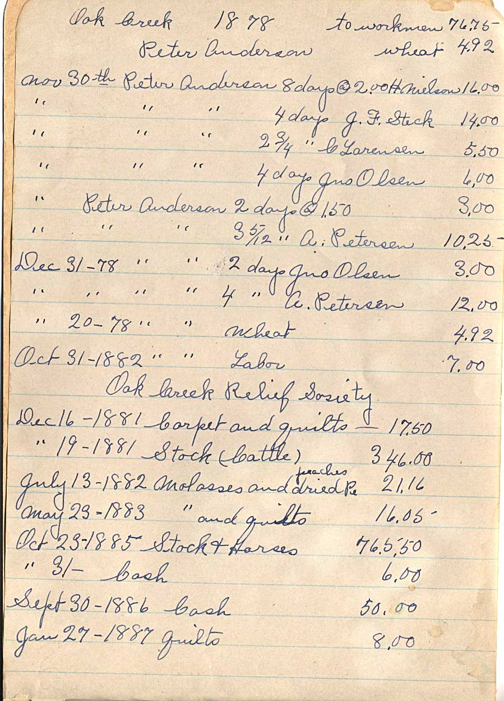

1878 Oak Creek
Work on Manti Temple
to workmen
74.33
+ 15.00 cash
Nov 1878 John Lovell 3 days @ 2.00 H. Nielson 6.00
" " " " 4 " J. Buckle 8.00
" " " " 1 3/4 " N. Christeansen 3.50
" " " " 2 days C. Cramer 4.00
" " " " 1 1/2 " " 3.00
Dec " " " 6 days H. Miller 12.00
" " " " 2 " P. Larsen 7.00
" " " " 3 1/10 " A. Petersen 9.30
" " " " 1 day Jno Olsen 1.50
" " " " 5 " J. A. Goodfellow 10.00
" " " " 4 9/10 days H. Miller 9.83
Oct 31 - 1879 " " - cash 15.00
second page

Oak Creek 1878 to workmen 76.75
Peter Anderson wheat 4.92
Nov 30th Peter Anderson 8 days @ 2.00 H. Nielson 16.00
" " " 4 days J. F. Steck 14.00
" " " 2 3/4 " C. Larensen 5.50
" " " 4 days Jno Olsen 6.00
" Peter Anderson 2 days @ 1.50 3.00
" " " 3 5/12 " A. Petersen 10.25
Dec 31 - 78 " " 2 days Jno Olsen 3.00
" " " 4 " A. Petersen 12.00
" 20 - 78 " " wheat 4.92
Oct 31 - 1882 " " Labor 7.00
Oak Creek Relief Sosiety
Dec 16 - 1881 Carpet and quilts - 17.50
" 19 - 1881 Stock (Cattle) 346.00
peaches
July 13 - 1882 Molasses and dried Pe 21.16
May 23 - 1883 " and quilts 16.05
Oct 23 - 1885 Stock & Horses 76.5.50
" 31 - Cash 6.00
Spet 30 - 1886 Cash 50.00
Jan 27 - 1887 Quilts 8.00
book cover (all other pages blank)